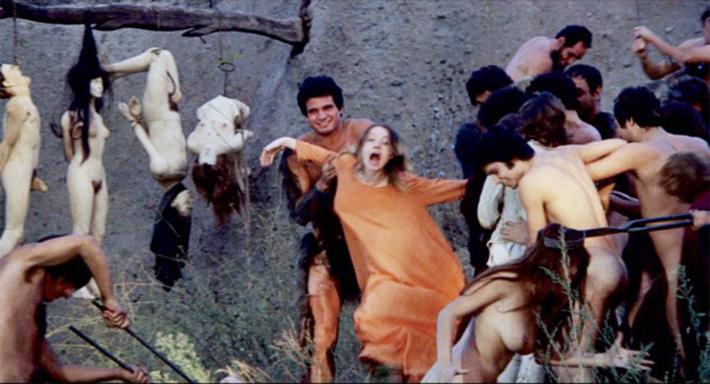
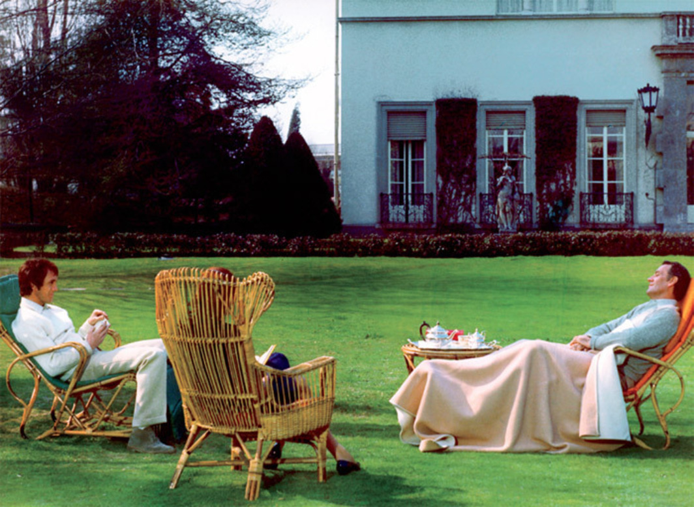
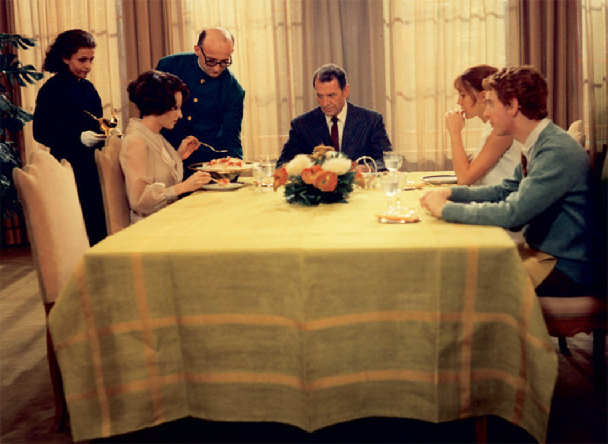

A Journey Through History, Culture & Innovation
PIER PAOLO PASOLINI first visited New York City in late 1966, and what he found there surprised him: In the heated context of the antiwar movement and the struggle for civil rights—which he characterized forcefully as a “civil war”—the forty-four-year-old Italian poet and filmmaker rediscovered a spirit of political and cultural renewal that he had experienced only once before, during the last months of World War II, when the Italian partisans rose up against Nazism and Fascism in what was itself largely an internecine conflict—one that had claimed his brother’s life.
In America, if only during a very brief visit, I lived many hours in the sort of climate of clandestinity, revolutionary urgency, and hope that belonged to the Europe of 1944 and 1946. In Europe now, everything is finished; in America, you get the feeling that everything is about to begin. . . . People live there as if on the eve of great things. The people of the New Left (which doesn’t exist—it’s just an idea, an ideal) recognize one another at first sight, and a sort of love is born between them, just as happened among the partisans.¹
Pasolini found this spirit of resistance in the Black Panthers he met in Harlem, in members of the Student Nonviolent Coordinating Committee and Students for a Democratic Society, in union organizers, in hippies he watched singing peace songs to neo-Nazis, and in some American artists and poets he met, Allen Ginsberg foremost among them. “I love Ginsberg,” he remarked at the time. “It’s been a long time since I read poems by a brother poet.”² And he found a perhaps unexpected audience for his work. His first film, Accattone (1961), and his newest one, Hawks and Sparrows (1966), were both projected at that year’s New York Film Festival, and he was happy with the reception they were given in spite of their many pointed references to American foreign policy and the Hollywood studio system. He would leave New York with a renewed aesthetic enthusiasm, which would find expression in his 1968 film Teorema (whose concluding howl in the desert represents a striking homage to Ginsberg and the New Left), as well as in a screenplay for a film about the life and apostolic mission of Saint Paul set, in part, in contemporary New York.
His faith in poetic creativity was revived in an America still free from the intellectual traditions—including the traditions of the Left, he said—that asphyxiated him at home. As he wrote to Ginsberg after his trip:
All Americans are forced to be inventors of words! In Italy, instead, we (even those now sixteen years old) already have our revolutionary language, with its own ethics behind it. Even the Chinese speak like civil servants. Even myself—as you see. . . . I never succeed in forgetting, not even at this moment, that I have linguistic obligations.³
It is this struggle with “linguistic obligations”—the traditions and conventions of the languages of poetry and, most of all, film—and this desire to be an “inventor” of forms that characterize Pasolini’s project, as a writer and as a filmmaker.
Now, nearly fifty years after his first visit to the city—long after the “eve of great things” that Pasolini once predicted for our country—the Museum of Modern Art in New York is presenting its second complete retrospective of his work.
PASOLINI WAS AN EXTRAORDINARILY IMPORTANT figure in Italian and European culture, leaving his mark not only as a poet and filmmaker but also as a novelist, a journalist, and a theorist of the arts. It is no exaggeration to suggest that he is the most influential cultural figure in Italy since the Second World War, and his influence remains largely undiminished since his assassination in 1975—a crime still shrouded in mystery and often likened, by Italians, to the assassination of JFK (both in terms of its cultural significance and in acknowledgment of the multitudinous conspiracy theories that surround it).
Although he is lionized today, Pasolini was, to say the least, a challenging presence in Italian cultural and political life, ever questioning dogma all along the ideological spectrum, beginning with his own political and artistic stances, which were often profoundly contradictory. He was, after all, a gay Catholic Marxist. His was a persona that brought together three presumedly mutually exclusive identities, a persona that reflected the political and ideological fault lines and institutions that conditioned Italian social life: the Roman Catholic Church and the Christian Democratic Party that represents it, on the one hand, and the Communist Party, which emerged victorious from the Resistance and stood in opposition to the church, on the other. Being a Catholic Marxist was exceedingly difficult in the aftermath of the war in Italy; to be gay, as well, was all but unthinkable. It was perhaps this untenable combination of identities within Pasolini’s complex character that formed the matrix for his unorthodox approach to art and politics, resulting in a discomfiting and often scandalous body of work and leaving behind a legacy of radical questioning and intellectual vitality for the generations of filmmakers and artists who came after him.
 Still from Pier Paolo Pasolini’s Decameron, 1971, 35 mm, color, sound, 111 minutes.Pasolini was born in 1922 in Bologna. His father was an officer in the Italian army, his mother a schoolteacher from Friuli, a region in northeastern Italy. For much of World War II, Pasolini’s family took refuge in his mother’s hometown of Casarsa, while his father served in Africa, where he was eventually taken prisoner. In the last months of the war, Pasolini’s brother Guido joined the partisans and was killed in a dispute with a rival partisan group in the hills of Friuli. His death would leave a profound mark on Pasolini’s work, right up to the end.
It was during these years of war that Pasolini began to write poetry in Friulan, one of the many linguistically distinct local dialects that coexist with standard Italian.⁴ In the early 1940s, Pasolini’s choice of Friulan was significant for several reasons. First of all, during the Fascist period, Benito Mussolini had outlawed any use of regional dialects, in order to strengthen the culture of the nation-state by making a single language the basis of a national identity. To write poetry in a dialect was an act of resistance that was at once literary and political. Pasolini’s early refusal of standard Italian was a rehearsal for his turn away from literary writing toward filmmaking in the early ’60s, when he made Accattone, whose main characters all speak Romanesco. But another motivation for Pasolini’s adoption of Friulan was his identification with the peasant farmers, or contadini, whose rural traditions and regional culture were, he thought, in the process of being wiped out by the nationalistic culture of modern, industrial Italy. Pasolini would never abandon his loyalty to the peasantry or to the local languages and cultures of Italy’s lower classes, either in his writing or in his films. One of the most controversial choices he made in his 1971 adaptation of Boccaccio’s Decameron, for example, was to have the characters speak the dialect of Naples rather than Boccaccio’s Florentine, the idiom that laid the foundation for the standard Italian adopted as the national tongue after the country’s unification in the late nineteenth century.
But on a more basic level, Pasolini chose to write poetry in Friulan because it was his mother’s dialect; it was the mother tongue that enveloped him as a child. To write in this language represented a return to origins, a regression to the lost paradise of the maternal bond. Nico Naldini, Pasolini’s first cousin and biographer, observed that when Pasolini began writing in dialect in the early ’40s—before his homosexuality led to his banishment from Friuli and his expulsion from the homophobic Italian Communist Party in 1949—each poem represented the invention of a new poetic language, the fresh translation of sounds and meanings into written form.⁵ When he turned to cinema in the ’60s, he was attracted to motion pictures as a language that, like dialect, was not burdened with centuries of accumulated traditions or “linguistic obligations”—a visual language of great expressive energy that was universally accessible.
For Pasolini, the language of poetry and poetic art, including the cinema, was one of great vitality that could reconnect the writer and his audience with the most elemental aspects of life. Indeed, Pasolini would come to argue that the language of the cinema was perhaps the most poetic of all and could break through the conventions and clichés of culture, putting spectators in touch with reality itself. While, for example, the word tree, written or spoken, is purely conventional—or “arbitrary,” as linguists say—the filmic image of a tree is indexically related to that tree; that is, to the thing itself. For Pasolini, a “cinema of poetry” can expose us to things themselves in a way other languages and media cannot, which explains his almost mystical faith in the medium of cinema. Accused by the structuralists of semiotic naïveté (most forcefully by Umberto Eco, whom Pasolini then parodied as one of the absurd Dantean dentists in Hawks and Sparrows), the director defiantly labeled his attitude toward film as “heretical empiricism,” and his ideas about the signifying force of film remain radical today.⁶ Pasolini’s “empiricism” would translate, in practice, into films of often brutal realism and extraordinary authenticity.
BUT PASOLINI WOULD NOT make a film until he was nearly forty years old, long after he had established his reputation as a poet, novelist, and short-story writer. By the time he shot Accattone, he had published several volumes of poetry, including his best-known collection, titled The Ashes of Gramsci and dedicated to the heroic anti-Fascist and cofounder of the Communist Party of Italy Antonio Gramsci, who died in the mid-’30s after a decade of incarceration in Mussolini’s prisons. Much of Pasolini’s work was produced under the sign of Gramsci, and the poet’s own brand of Marxism owed more to the Italian political theorist, who assigned to the arts a great importance in preparing the way for social change, than it did to Marx himself. Indeed, Pasolini inherited his belief in the revolutionary potential of the arts directly from Gramsci.
 Still from Pier Paolo Pasolini’s Teorema (Theorem), 1968, 35 mm, color, sound, 105 minutes. Maid (Laura Betti), Lucia (Silvana Mangano), servant (uncredited), Paolo (Massimo Girotti), Odetta (Anne Wiazemsky), and Pietro (Andrés José Cruz Soublette).Pasolini was also profoundly influenced by the Neorealist filmmakers and writers of the 1940s, who insisted on political and cultural engagement. His novels of the ’50s can be seen as examples of late-Neorealist literature, with their stories of lower-class characters—what he called “preindustrialized humanity”—struggling to survive in the ghettos of Rome after the disasters of World War II. When Pasolini began to make movies in the early ’60s, including his first two films, Accattone and Mamma Roma (1962), he would set his narrative in these same Roman ghettos and shantytowns, which had sprung up after the war on the outskirts of the city, and focus on the underworld’s cast of petty thieves, grifters, pimps, and prostitutes. Like Roberto Rossellini and Vittorio De Sica, Pasolini chose, for the most part, to shoot his films on location and use nonprofessional actors in an effort to increase the realism and authenticity of his work, a practice he adhered to throughout his career. There was a strong documentary impulse in Pasolini—a desire to carefully record the faces, bodies, gestures, and languages of the people of Italy and to represent the landscapes and cityscapes of his country, especially the Italy of the dispossessed, the new ghettos inhabited by ex-farmers and migrant laborers forced to abandon the farmland their families had worked for centuries, as the nation rapidly industrialized.
Pasolini would never abandon his dedication to the victims of modernization—those who, like the characters Ettore in Mamma Roma and Stracci in La Ricotta (1963), failed to adapt to the new economy and new lifestyles of modern Italy in the years after the war: the peasants, the subproletariat, and the toiling classes. For this reason, he would frequently be accused of nostalgia and of failing to understand or acknowledge the benefits of modernization. Pasolini’s critique of modernity and his insistence on the destructive nature of modern capitalism, its obliteration of local traditions and cultures in favor of international markets, were largely misunderstood by his contemporaries. Today, however, Pasolini has become a hero of no-global movements around the world, and his work has found a new resonance in today’s political and cultural debates concerning the impact of globalization.
It was precisely Pasolini’s knowledge of the Roman underworld—especially his familiarity with ghetto dialects—that led to his first encounters with the cinema. Most important, Federico Fellini hired him in 1956 to help write Nights of Cabiria (1957); Pasolini was asked to be a sort of script doctor, ensuring the authenticity of the lower-class characters’ speech and offering suggestions about slum locations where Fellini might shoot. Pasolini had an enormous impact on the film and would go on to collaborate with the maestro once again on the screenplay for La Dolce Vita, which premiered in 1960. While the actual nature of the creative partnership between the two men is only now beginning to emerge, as Pasolini’s contributions went mostly uncredited, it is certain that Fellini’s debt to Pasolini was great; perhaps in recognition of this fact, Fellini would not only encourage his protégé to make a film of his own but arrange for him to have access to the equipment and technicians needed to begin shooting Accattone. However, once Pasolini showed him footage, Fellini rejected the novice’s work and withdrew his support from the project. Their friendship never fully recovered.
Presumably what Fellini spurned was Pasolini’s naive style of filmmaking—his refusal to compose his shots or to edit his films according to cinematic conventions. Bernardo Bertolucci, who got his own start in film as the assistant director on Accattone, has described Pasolini’s style as “deliberately naive,” with the director approaching the cinema through the traditions of literature and painting rather than through the history of the cinema. Fellini, and others, probably mistook for incompetence Pasolini’s refusal of the “best practices” of the craft. For Bertolucci, to the contrary, watching Pasolini make Accattone was like being present at the birth of cinema: “One day Pasolini wanted to do a traveling shot. . . . It was like watching [D. W.] Griffith, like witnessing the invention of a new language. And he never spoke of cinema, only of drawings and paintings, altarpieces.”⁷ His was a profoundly original mode of filmmaking, which, like most innovations, was not immediately appreciated. What would eventually be recognized, however, was the extent to which Pasolini’s unique style of filming combined what we might call a naive realism, or a documentary impulse, with a highly cultivated repertoire of visual vocabularies and iconographic traditions inherited from the past.
IT IS THIS PARADOXICAL SYNTHESIS of extreme simplicity and extreme stylization that identifies Pasolini’s idiosyncratic style of filmmaking from the beginning of his career to its end. In his early films, including Accattone, Mamma Roma, and La Ricotta, Pasolini’s lowlifes, petty criminals, and prostitutes are filmed in the squalor of their slums as if they were saints in a medieval or Renaissance altarpiece, the close-ups of their faces taking on the expressive intensity of religious icons, images designed not only to record appearances but also to transmit sacred energies and offer mystical experiences. The frames of Pasolini’s films combine the language of the cinema with the figural traditions of painting; his images are often equal parts Rossellini and Giotto, Mizoguchi and Bosch, Chaplin and Pontormo, Dreyer and Brueghel. Examples of this sort of visual bricolage abound in Pasolini’s work, from Mantegna’s Dead Christ quoted at the tragic conclusion of Mamma Roma to the remakes of Descents from the Cross by the Mannerists Rosso Fiorentino and Pontormo in La Ricotta; from Giotto’s Last Judgment in The Decameron (1971) to Bosch’s Table of Wisdom in The Canterbury Tales (1972); from the erotic Persian miniatures in Arabian Nights (1974) to the cubo-futurist paintings in Pasolini’s last film, Salò, or the 120 Days of Sodom (1975). In Pasolini’s magnificent adaptation of Boccaccio’s Decameron—the central themes of which are sex and money, desire and moral probity—the director inserts a cinematic “remake” of Brueghel’s Fight Between Carnival and Lent as a sort of tableau vivant representing the struggle between the energies and impulses of the human body and the forces of social institutions exerting control over it. It is an epic representation of the traumatic domestication of the flesh—the carne, or carnal matter, of carnival against the repressive impositions symbolized by Lent.
 Still from Pier Paolo Pasolini’s Teorema (Theorem), 1968, 35 mm, color, sound, 105 minutes. The stranger (Terence Stamp), Odetta (Anne Wiazemsky), and Paolo (Massimo Girotti).But the painting does not only serve this thematic purpose, reiterating Pasolini’s messages in The Decameron (and throughout his “Trilogy of Life”) about liberated human bodies, a de-domesticated Eros; it also offers the director the opportunity to contaminate the filmic with the painterly, to mix languages, draw our attention to the expressive textures and materials of film, and reconnect film to a long history of visual codes that predate motion pictures but nevertheless culminate in the cinema. It was Pasolini’s way of giving expression to what he called an “eclecticism” at the heart of his cinema of poetry. His films offer a philology of visual idioms and iconographic traditions. And this visual amalgamation of styles and traditions is accompanied, on his sound tracks, by unusual mixtures of musical sources as well, in films that variously bring together Wagner and rock ’n’ roll, Vivaldi and the Twist, Mozart’s Marriage of Figaro and Ray Charles’s “I Got a Woman,” Iranian love songs and Tibetan bells. Elaborated in collaboration with such composers as Luis Enríquez Bacalov, Benedetto Ghiglia, Ennio Morricone, and Carlo Rustichelli, Pasolini’s sound tracks bring together the high and the low, the sublime and the kitsch, in unusual and challenging combinations.⁸
Pasolini would refer to his practice of melding various styles and traditions as a form of pastiche or contamination, and such fecund cross-fertilization, he believed, would produce a filmic language offering novel and profound aesthetic experiences. His style was unlike that of any other filmmaker before or since. The cinema of poetry he practiced constituted a resistance to the homogenized and formulaic style of commercial narrative films, which Pasolini called the “cinema of prose,” and embodied new possibilities for communication between social classes, between the traditions of the past and the forces of modernity, and between the resistant cultures of the marginalized and the technocratic cultures of the late-capitalist center.
It may be interesting to note similar uses of iconographic tradition in the work of directors such as Peter Greenaway and Jean-Luc Godard, who also reanimate paintings as tableaux vivants in their films (though precedents for this may be found from the very beginnings of cinema). It is possible to view Godard’s later films and his meditations on the iconic power of visual images (in his Dantesque Notre Musique [2004], for example) as carrying on a dialogue with Pasolini about visual language and the history of cinema that the two men began in the mid-’60s. For both Pasolini and Godard, the essentially visual medium of film has suffered from the domination of language and narrative, especially since the arrival of sound in the late ’20s. Pasolini, for his part, stated repeatedly that his turn from literature to cinema was motivated by his desire to use a nonverbal language that had a more direct connection to the world he wanted to describe and to the transnational audiences he wanted to reach.
ACROSS THE BODY of his filmography, Pasolini would sharpen his ideological and aesthetic messages—messages of resistance. While his early films were largely concerned with Italian history and domestic audiences, in his later work he would broaden his perspective dramatically in order to critique the global commodity capitalism that, he said, was transforming human beings into a chain gang of consumers. He described this with greater and greater urgency up to his death in 1975 as a “genocide” of the working classes of the world, who were being transformed, body and mind, into an alienated and neurotic petite bourgeoisie, a new global middle class regulated by technology. He condemned obligatory public education and the mass media (particularly television but also commercial cinema) for this genocide of the popular classes across the planet. In Hawks and Sparrows, for instance, he allegorized the goals (and perhaps prophetically predicted the outcome) of his radical film practice as a neo-Franciscan attempt to learn the languages of the predatory capitalists (hawks) and the preyed-on working classes (sparrows) in order to convince them of the folly of their ways: The film concludes, famously, with the murder and consumption of Pasolini’s alter ego, the Gramscian crow whose lectures of fraternal solidarity provoke the wrath of Cicillo (Totò) and Ninetto (Ninetto Davoli), ex-farmers with bourgeois ambitions and little patience for talk of resistance.
Between 1971 and 1974, Pasolini made the three films of the “Trilogy of Life”—The Decameron, The Canterbury Tales, and Arabian Nights—adapting these masterworks from premodern literary traditions, he said, in order to allow a forceful recollection of the historical past to contest the alienating present, to blast audiences out of the obscure moment into historical reflection. And though the films that constitute the trilogy may not be overtly ideological (this was the criticism of the Left in Italy) and do not share the dark tone of some of Pasolini’s late films—the notoriously pessimistic Porcile (Pigsty, 1969) and Salò, for example—they are nevertheless challenging in their investigation of taboo subjects, in their frank representation of the human body, and in their defense of the local languages and cultures of the subjugated classes of Italy and beyond. They are also remarkable models of an alternative cinema evolving outside and against the dominant modes of commercial moviemaking. Indeed, it was probably for all these reasons that Pasolini once claimed that the films of the “Trilogy of Life” were the most ideological he ever made.
But the film that has come to sum up Pasolini’s contempt for the culture and economy of mass consumerism, represented as a new form of homicidal totalitarianism requiring new forms of resistance, is his scabrous Salò—the film most identified with Pasolini’s own murder, inasmuch as it premiered soon after his death and immediately began its adventures with censors and other defenders of decency and good taste. Undoubtedly because of the extreme violence and degradation of its unflinching depiction of the anarchy of power, Salò is the film that has been singled out most frequently over the years for censorship; but, as Pasolini Foundation director Laura Betti has documented, censorship (or, as she more forcefully calls it, persecution) was the norm for nearly every film or novel Pasolini ever produced.⁹ Certainly, his films have not stopped scandalizing audiences, which suggests they still pack a useful punch.
PASOLINI’S INFLUENCE continues to be felt in culture and politics; indeed, the filmmaker has become a symbol of resistance to neoliberalism and globalization—a “Chomsky all’italiana.”¹⁰ Demonstrators at the tragically violent 2001 G8 Summit in Genoa condemned the ruling elite of Italy by holding up a banner bearing the filmmaker’s likeness, chanting, “Contro Berlusconi e contro Fini abbiam portato Pasolini!” (“Against Berlusconi and Fini we have brought Pasolini!”) And the very vocabulary of contemporary analysis of global neoliberalism is largely inherited, in Italy at least, from Pasolini’s controversial essays on the rise of transnational consumer capitalism, written in the last years of his life—before his brutal murder would lead to his sanctification as a martyr of the antiglobalization movement. He remains, of course, an influential figure for cineastes, novelists, and poets, as evidenced by the films of Bernardo and Giuseppe Bertolucci, Gianni Amelio, Nanni Moretti, Mario Martone, Antonio Capuano, Daniele Ciprì, and Franco Maresco and in the writing of Roberto Saviano, Tiziano Scarpa, and the late Elio Pagliarani (whose poetic remakes of Savonarola’s sermons against greed and corruption were offered as an homage to Pasolini). And though often underappreciated, Pasolini’s impact on debates in semiotics and critical theory has been enormous, as seen clearly in the influence of his thought on Roland Barthes, Michel Foucault, Giorgio Agamben, and, perhaps most of all, Gilles Deleuze, whose philosophy of cinema was developed in dialogue with Pasolini’s writings on the “cinema of poetry.”
It is primarily on account of his literary works and his singular, stubbornly unsettling body of films that Pasolini’s legacy will endure in spite of the violent elimination of the exemplary artist and thinker who bequeathed it to us. Pier Paolo Pasolini’s work survives as the bittersweet fruit of a hard-won and fiercely defended freedom.
The film retrospective “Pier Paolo Pasolini,” organized by Jytte Jensen, remains on view through January 5 at the Museum of Modern Art in New York. The Criterion Collection’s box set of the “Trilogy of Life” was released this past November.
A professor in the department of French and Italian at the University of Wisconsin, Madison, Patrick Rumble is the author of Allegories of Contamination: Pier Paolo Pasolini’s Trilogy of Life (University of Toronto Press, 1996).
NOTES
1. Pier Paolo Pasolini, “Guerra civile,” Paese sera, November 18, 1966. All translations in this essay are mine.
2. As quoted in Nico Naldini, Pasolini, una vita (Turin: Einaudi, 1989), 307.
3. Pier Paolo Pasolini, Lettere, vol. 2 (Turin: Einaudi, 1988), 631.
4. It might be useful to note, since it helps to understand Pasolini’s films, that nearly all Italians are bilingual, speaking both standard Italian—the official language of Italy—and one of the country’s regional dialects, which are often mutually incomprehensible.
5. See Naldini, Pasolini, una vita, 31–34.
6. See Pasolini’s essays on film in Heretical Empiricism, ed. Louise K. Barnett, trans. Ben Lawton and Louise K. Barnett (Bloomington: Indiana University Press, 1988).
7. As quoted in Maria Pia Fusco, “Pasolini, un genio che reinventò il cinema,” La Repubblica, November 5, 1995.
8. For an extraordinarily rich study of music in Pasolini’s work, see Roberto Calabretto, Pasolini e la musica (Pordenone, Italy: Cinemazero, 1999).
9. See Laura Betti, Pasolini: Cronaca giudiziaria, persecuzione, morte (Milan: Garzanti, 1978).
10. Romano Luperini, “L’asimmetria di Pasolini,” Carta, no. 10 (March 2002).
Source: ArtForum
Our user-friendly interface allows you to seamlessly navigate between articles and visualize their locations on an interactive map, while our commitment to editorial excellence ensures that every piece is engaging, informative, and accurate. The Discovering Bologna team has meticulously crafted every typographic detail, from font families and sizes to colors, margins, aspect ratios, and captivating images with captivating captions, to truly reflect the graphic theme and ambiance of this captivating city.
Join us on this digital adventure and explore the wonders of Bologna like never before, all from the comfort of your own home. Discovering Bologna: Unraveling the secrets of the city, one story at a time.